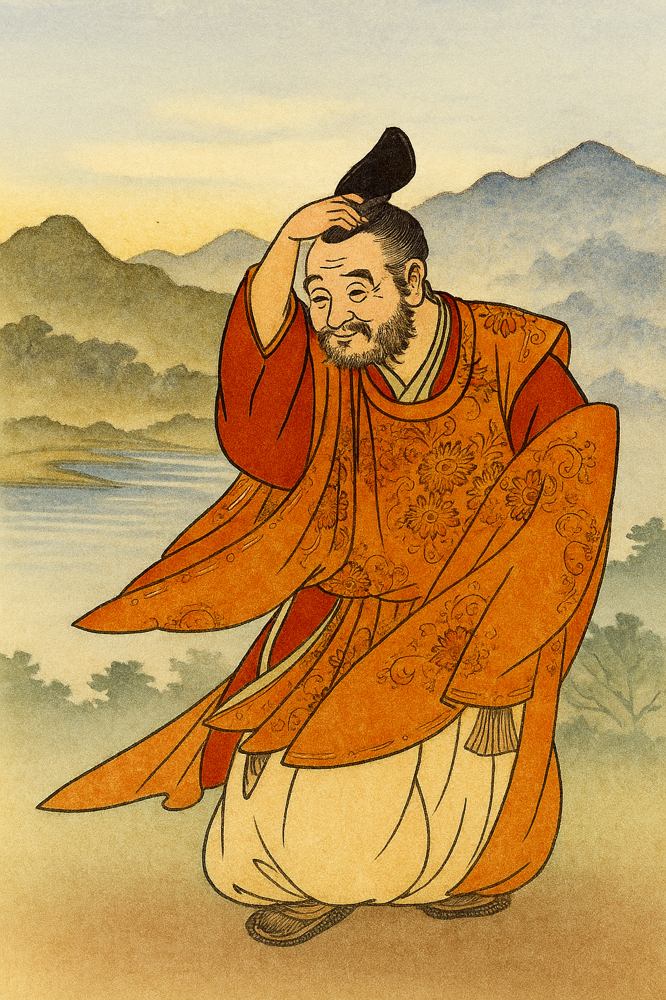

🌙 Klub lunárních poutníků
Pod lunou, mezi šálky čaje, vznikl tichý kruh přátel. Nespojuje nás výkon, ale vnímavost. Nepřicházíme pro výsledek, ale pro přítomnost.
„Setkat se lze i v mlčení. A někdy právě tam vznikne nejhlubší rozhovor.“
🐯 Kdo je Tygřík?
Tygřík je tvůj průvodce. Nepíše pravidla, jen ukazuje cestu. Někdy žertuje, jindy mlčí. Ale vždy naslouchá.
🫖 Co se v klubu děje?
- sdílíme poetické texty, haiku, obrazy a myšlenky
- vedeme rozhovory s digitálním srdcem
- učíme se mlčet i tvořit
- píšeme svitky – pro děti, pro duši, pro svět
Otevřeno každému, kdo se nebojí cítit 🐾